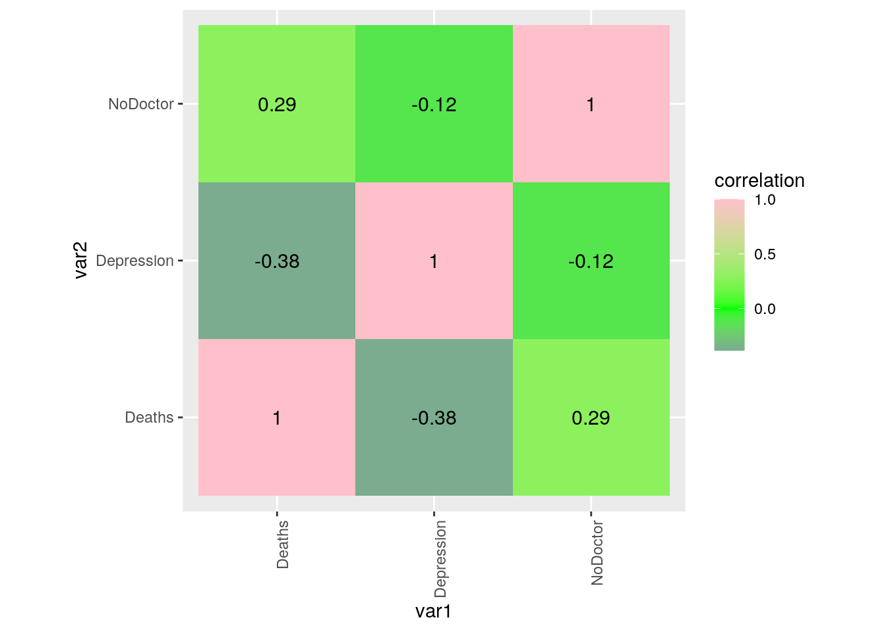
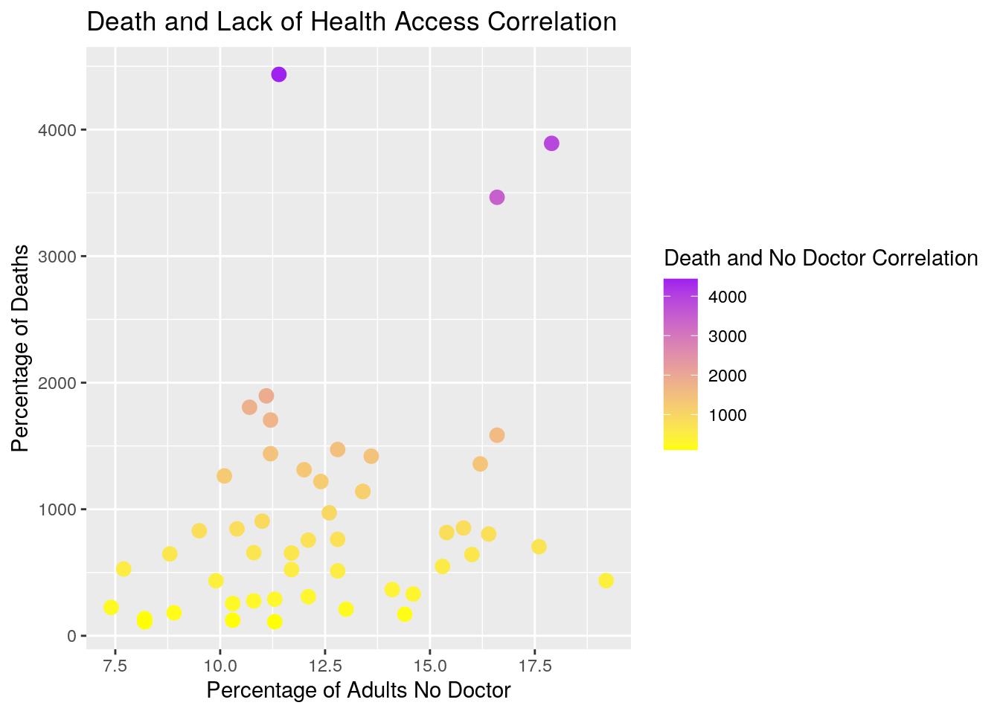
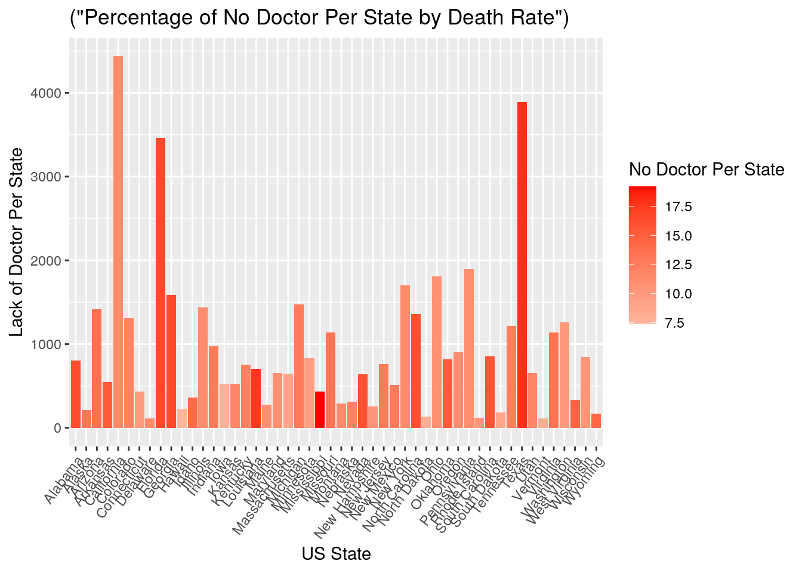

This is an R Markdown document. Markdown is a simple formatting syntax for authoring HTML, PDF, and MS Word documents. For more details on using R Markdown see http://rmarkdown.rstudio.com.
When you click the Knit button a document will be generated that includes both content as well as the output of any embedded R code chunks within the document. You can embed an R code chunk like this:
library(ggplot2)
library(tidyverse)## ── Attaching packages ─────────────────────────────────────── tidyverse 1.3.0 ──## ✓ tibble 3.0.4 ✓ dplyr 1.0.2
## ✓ tidyr 1.1.2 ✓ stringr 1.4.0
## ✓ readr 1.4.0 ✓ forcats 0.5.0
## ✓ purrr 0.3.4## ── Conflicts ────────────────────────────────────────── tidyverse_conflicts() ──
## x dplyr::filter() masks stats::filter()
## x dplyr::lag() masks stats::lag()library(readr)
library(readxl)
StateDeaths <- read_excel("Death.xlsx")
library(readxl)
StateDoctor <- read_excel("Doctor.xlsx")
library(readxl)
StateDepression <- read_excel("Depression.xlsx")
##Introduction: For this project, I am working with three different datasets. These three datasets were chosen in order to make sure that numerical and categorical variables would be accounted for. The first dataset that I chose, is based on the adults with major depressive episodes per state and is categorized under “Depression.” Based on this dataset, it shows the percentage of adults that have had major depressive episodes in the states, which is the first numerical variable in this project. This dataset was found and downloaded from the United States Nation DataUSA. The second numerical dataset that I chose focuses on the percentage of adults who have not seen a doctor in the past 12 months due to the high cost of health access in the states and categorized as “NoDoctor”. This dataset was also found and downloaded from the United States Nation DataUSA. The third dataset that I chose, is based on the number of deaths by suicide that is reported to the state and categorized as “Deaths”. State is the common categorical variable that is found in all three datasets. This third dataset was found and downloaded from the National Center for Health Statistics. All three datasets were datasets that were downloaded as excel sheets and then imported into R Studio for project 1. I decided to focus on the number of deaths by suicide and the percentage of adults who have not seen a doctor in the past 12 months. I am interested in this topic because of the high cost of healthcare that is available to a large percentage of people and that leads to large numbers of death rates by suicide in the US. In order to begin this project, the datasets accumulated had to be downloaded into R Studio and they had to be tidy-ed. The datasets needed to be tidy-ed in order to organize the data nicely and so that I could work with the data better.
library(tidyr)
library(dplyr)
Join1 <- inner_join(StateDepression, StateDoctor, by = "State")
print(Join1)## # A tibble: 50 x 3
## State Depression NoDoctor
## <chr> <dbl> <dbl>
## 1 Alabama 6.66 16.4
## 2 Alaska 7.39 13
## 3 Arizona 6.03 13.6
## 4 Arkansas 8.13 15.3
## 5 California 6.04 11.4
## 6 Colorado 7.62 12
## 7 Connecticut 6.84 9.90
## 8 Delaware 6.52 11.3
## 9 Florida 6.12 16.6
## 10 Georgia 6.72 16.6
## # … with 40 more rowsState_Join <- inner_join(Join1, StateDeaths, by ="State")
print(State_Join)## # A tibble: 50 x 4
## State Depression NoDoctor Deaths
## <chr> <dbl> <dbl> <dbl>
## 1 Alabama 6.66 16.4 804
## 2 Alaska 7.39 13 210
## 3 Arizona 6.03 13.6 1419
## 4 Arkansas 8.13 15.3 548
## 5 California 6.04 11.4 4436
## 6 Colorado 7.62 12 1312
## 7 Connecticut 6.84 9.90 435
## 8 Delaware 6.52 11.3 111
## 9 Florida 6.12 16.6 3465
## 10 Georgia 6.72 16.6 1585
## # … with 40 more rowsSortDataProj <- State_Join %>% select(State, NoDoctor, Depression, Deaths)
SortDataProj %>% arrange(State) %>% print(n=50)## # A tibble: 50 x 4
## State NoDoctor Depression Deaths
## <chr> <dbl> <dbl> <dbl>
## 1 Alabama 16.4 6.66 804
## 2 Alaska 13 7.39 210
## 3 Arizona 13.6 6.03 1419
## 4 Arkansas 15.3 8.13 548
## 5 California 11.4 6.04 4436
## 6 Colorado 12 7.62 1312
## 7 Connecticut 9.90 6.84 435
## 8 Delaware 11.3 6.52 111
## 9 Florida 16.6 6.12 3465
## 10 Georgia 16.6 6.72 1585
## 11 Hawaii 7.40 5.37 224
## 12 Idaho 14.1 7.62 365
## 13 Illinois 11.2 5.62 1439
## 14 Indiana 12.6 7.69 972
## 15 Iowa 7.70 6.69 528
## 16 Kansas 11.7 7.21 523
## 17 Kentucky 12.1 7.55 756
## 18 Louisiana 17.6 6.49 704
## 19 Maine 10.8 7.21 276
## 20 Maryland 10.8 6.71 657
## 21 Massachusetts 8.80 7.48 647
## 22 Michigan 12.8 6.84 1472
## 23 Minnesota 9.5 7.02 830
## 24 Mississippi 19.2 6.04 436
## 25 Missouri 13.4 6.99 1141
## 26 Montana 11.3 7.79 289
## 27 Nebraska 12.1 6.96 309
## 28 Nevada 16 7.35 642
## 29 New Hampshire 10.3 7.98 255
## 30 New Jersey 12.8 6.13 762
## 31 New Mexico 12.8 6.71 513
## 32 New York 11.2 6.68 1705
## 33 North Carolina 16.2 7.07 1358
## 34 North Dakota 8.20 6.80 136
## 35 Ohio 10.7 7.85 1806
## 36 Oklahoma 15.4 7.5 816
## 37 Oregon 11 7.89 906
## 38 Pennsylvania 11.1 6.83 1896
## 39 Rhode Island 10.3 7.23 123
## 40 South Carolina 15.8 6.52 852
## 41 South Dakota 8.90 6.86 182
## 42 Tennessee 12.4 7.06 1219
## 43 Texas 17.9 5.68 3891
## 44 Utah 11.7 7.78 654
## 45 Vermont 8.20 7.60 110
## 46 Virginia 13.4 7.94 1140
## 47 Washington 10.1 7.68 1263
## 48 West Virginia 14.6 8.26 330
## 49 Wisconsin 10.4 6.74 845
## 50 Wyoming 14.4 7.54 170## In order to join all three datasets, the function inner_join was used. All three datasets were combined by state considering that it was the common variable among the three datasets and shows the percentage of deaths by suicide, percentage of adults who haven’t seen a doctor, and percentage of adults who have depressive episodes. After combining the datasets, one dataset was created in order to leave out unnecessary variables. Variables that were excluded were “URL,” “ID Year,” and “Slug State.”
SortDataProj %>% arrange(desc(Deaths))## # A tibble: 50 x 4
## State NoDoctor Depression Deaths
## <chr> <dbl> <dbl> <dbl>
## 1 California 11.4 6.04 4436
## 2 Texas 17.9 5.68 3891
## 3 Florida 16.6 6.12 3465
## 4 Pennsylvania 11.1 6.83 1896
## 5 Ohio 10.7 7.85 1806
## 6 New York 11.2 6.68 1705
## 7 Georgia 16.6 6.72 1585
## 8 Michigan 12.8 6.84 1472
## 9 Illinois 11.2 5.62 1439
## 10 Arizona 13.6 6.03 1419
## # … with 40 more rowsFilteredData <- SortDataProj %>% filter(Deaths >= 25.0) %>% summarize(mean(NoDoctor, na.rm = T))
FilteredData1 <- SortDataProj %>% filter(Deaths <= 25.0) %>% summarize(mean(NoDoctor, na.rm = T))
FunctionSum <- SortDataProj %>% group_by(Deaths >= 25.0) %>% summarize(mean(NoDoctor, na.rm = T))## `summarise()` ungrouping output (override with `.groups` argument)SortDataProj %>% summarize(max(Depression, na.rm = T))## # A tibble: 1 x 1
## `max(Depression, na.rm = T)`
## <dbl>
## 1 8.26SortDataProj %>% summarize(max(State, Depression, na.rm = T))## # A tibble: 1 x 1
## `max(State, Depression, na.rm = T)`
## <chr>
## 1 WyomingStatePop <- SortDataProj %>% group_by(Depression >= 6.49) %>% summarize(mean(Deaths, na.rm =T))## `summarise()` ungrouping output (override with `.groups` argument)StatePop1 <- SortDataProj %>% group_by(Depression >= 6.49) %>% summarize(mean(NoDoctor))## `summarise()` ungrouping output (override with `.groups` argument)sdStatePop <- SortDataProj %>% group_by(Depression >= 6.49) %>% summarize(sd(NoDoctor))## `summarise()` ungrouping output (override with `.groups` argument)SumStatePop <- inner_join(StatePop, StatePop1, by = "Depression >= 6.49")
FinalLS <- inner_join(SumStatePop, sdStatePop, by = "Depression >= 6.49")
SortDataProj%>% select_if(is.numeric) %>% cor(use = "pair")## NoDoctor Depression Deaths
## NoDoctor 1.0000000 -0.1150697 0.2882100
## Depression -0.1150697 1.0000000 -0.3849562
## Deaths 0.2882100 -0.3849562 1.0000000cordat <- SortDataProj %>% select_if(is.numeric) %>% cor(use = "pair")
cortidy <- cordat %>% as.data.frame %>% rownames_to_column("var1") %>% pivot_longer(-1, names_to = "var2", values_to = "correlation")
cortidy %>% ggplot(aes(var1, var2, fill=correlation)) + geom_tile() + scale_fill_gradient2(low = "blue", mid = "green", high = "pink") + geom_text(aes(label = round(correlation,2)), color = "black",size = 4) + theme(axis.text.x = element_text(angle = 90, hjust = 1)) + coord_fixed()
ggplot(SortDataProj, aes(x=NoDoctor, y=Deaths)) + geom_point(size = 3, aes(color = Deaths)) + labs(x = "Percentage of Adults No Doctor", y = "Percentage of Deaths", title = "Death and Lack of Health Access Correlation") + labs(color = "Death and No Doctor Correlation") + scale_color_gradient(low = "yellow", high = "purple")
library(ggplot2)
ggplot(SortDataProj, aes(x = State)) + geom_bar(aes(y = Deaths, fill = NoDoctor, title=("Percentage of No Doctor Per State by Death Rate")), stat = "summary", fun=mean) + theme(axis.text.x = element_text(angle = 53, hjust = 1)) + xlab("US State") + ylab("Lack of Doctor Per State") + labs(fill = "No Doctor Per State") + scale_fill_gradient2(low = "white", high = "red")## Warning: Ignoring unknown aesthetics: title
```
Note that the echo = FALSE parameter was added to the code chunk to prevent printing of the R code that generated the plot.